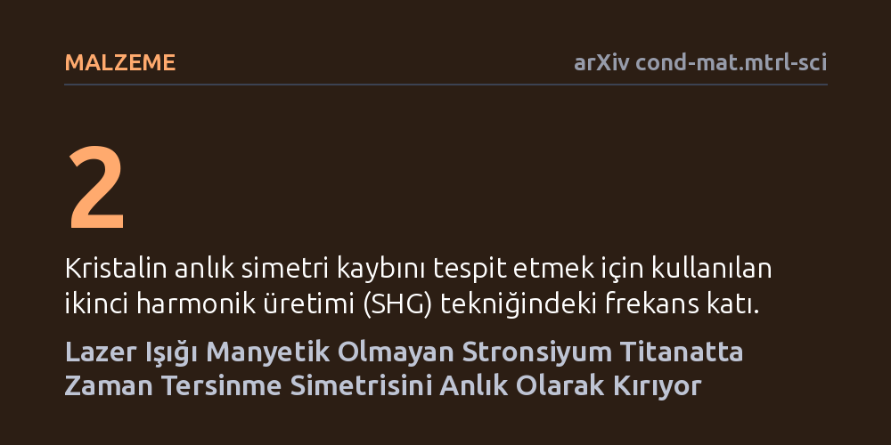

MALZEME · arXiv cond-mat.mtrl-sci · 2026-09-11
Araştırmacılar, manyetik olmayan kübik stronsiyum titanat kristalinde zaman tersinme simetrisinin ışık darbeleriyle ultra hızlı ölçekte kontrol edilip edilemeyeceğini araştırdı. Eliptik polarize terahertz lazer atımları uygulandığında malzemenin ayna simetrisinin bozulduğu, manyetik simetrisinin düştüğü ve zaman tersinme simetrisinin anlık olarak kırıldığı saptandı.
Normalde manyetik olmayan ve dengede duran katı maddelerin temel kuantum simetrilerinin ışıkla anlık olarak değiştirilebileceğini göstererek ultra hızlı optik kontrolün önünü açıyor.

Katı hal fiziğinde malzemelerin sergilediği tüm elektriksel ve manyetik özellikler, atomların dizilimine ve sahip oldukları iç simetrilere bağlıdır. Bu simetrilerin en önemlilerinden biri zaman tersinme simetrisidir; yani zamanın ileriye ya da geriye doğru akması durumunda fiziksel sistemin aynı kalması ilkesidir. Manyetik olmayan yalıtkan malzemelerde bu simetri doğal olarak korunur ve maddenin manyetik davranışlar sergilemesini engeller. Ancak dengede duran bir malzemenin izin vermediği durumları tetiklemek, yeni kuantum halleri oluşturabilmek için araştırmacılar simetrileri dışarıdan manipüle etmenin yollarını aramaktadır.
Manyetik alanlar geçmişte bu simetriyi değiştirmek için kullanılmış olsa da, manyetik olmayan yalıtkan oksitlerde simetrinin son derece kısa zaman aralıklarında dinamik olarak kontrol edilmesi bugüne kadar deneysel olarak neredeyse hiç incelenmemişti. Eğer bir malzeme yalnızca üzerine ışık tutulduğu anlarda manyetik simetrisini kaybedip yeni özellikler kazanabiliyorsa, bu durum malzemeyi kalıcı olarak bozmadan anlık olarak yönlendirebileceğimiz anlamına gelir. Çalışmanın temel çıkış noktasını da bu soru oluşturuyor: Işığın açısal momentumu kullanılarak manyetik olmayan bir kristalde zaman simetrisi saniyenin trilyonda birinden daha kısa bir sürede kırılabilir mi?
Araştırmacılar bu soruyu yanıtlamak için perovskit kristal yapısına sahip, oda sıcaklığında manyetik özellik göstermeyen kübik stronsiyum titanat (SrTiO3) kristalini incelemeye aldı. Deney düzeneğinde kristal, rezonans dışı ve eliptik polarize edilmiş terahertz frekansındaki ultra hızlı ışık atımlarıyla uyarıldı. Eliptik polarizasyon, ışığın elektrik alan vektörünün dairesel bir dönüş yapmasını sağlayarak fotonların kristale açısal momentum aktarmasına olanak tanıdı.
Işığın malzeme üzerindeki anlık etkisini gözlemlemek için ikinci harmonik üretimi kutupölçümü (polarimetri) adı verilen hassas bir optik teknik kullanıldı. Bu yöntemde kristale gönderilen lazer ışığının frekansının iki katına çıkan yanıtı ölçülür; normal kübik simetriye sahip bir kristalde bu yanıt belirli katı kurallara tabidir. Araştırmacılar, uygulanan terahertz darbesinin açısal momentumunu değiştirerek yansıyan ikinci harmonik sinyalinin dairesel dikroizmini ve kutupsal saçılma desenlerini takip etti.
Ölçümler, terahertz darbesi kristale çarptığı anda malzemenin optik davranışında belirgin bir dönüşüm yaşandığını gösterdi. Normalde kübik simetriye sahip olan kristalden beklenmeyen bir dairesel dikroizm sinyali ortaya çıktı. Yapılan ayrıntılı polarimetri analizleri, malzemenin standart ayna simetrisinin kaybolduğunu ve kristalin geçici olarak tetragonal 4/mm'm' manyetik simetri sınıfına gerilediğini ortaya koydu.
Daha da önemlisi, elde edilen ikinci harmonik yanıtının büyüklüğü, uygulanan terahertz darbesinin açısal momentumu ile doğrudan doğrusal bir ölçeklenme sergiledi. Bu doğrusal ilişki, malzemedeki simetri değişiminin rastgele bir ısınmadan değil, doğrudan terahertz ışık alanının taşıdığı açısal momentumun kristal yapısına aktarılmasından kaynaklandığını kanıtladı. Böylece manyetik olmayan bir yalıtkanda zaman tersinme simetrisinin ışık yoluyla anlık olarak kırılabileceği doğrudan gösterildi.
Bu bulgu, manyetik olmayan yalıtkan oksitlerin temel simetrilerinin saniyenin trilyonda biri gibi ultra hızlı zaman ölçeklerinde ışıkla kontrol edilebileceğini deneysel olarak ispatlamaktadır. Malzemenin kimyasal bileşimini veya sıcaklığını değiştirmeden, yalnızca üzerine düşen ışığın polarizasyonunu ayarlayarak malzemenin kuantum durumları arasında geçiş yapmak mümkün hale gelmektedir. Bu durum, katı maddelerin denge durumunda izin verilmeyen özelliklerinin ihtiyaç anında ortaya çıkarılabilmesi için doğrudan bir yöntem sunmaktadır.
Ancak bu sonucun laboratuvar ortamında, tek bir malzeme kristali üzerinde elde edilmiş bir ilk bulgu olduğunu unutmamak gerekir. Ortaya çıkan simetri kırılması kalıcı bir manyetik faz oluşturmamakta, yalnızca ışık darbesinin sürdüğü anlık zaman diliminde varlığını korumaktadır. Gelecekte bu yaklaşımın farklı oksit ailelerinde tekrarlanması ve elde edilen ultra hızlı simetri kontrolünün pratik optoelektronik sistemlere nasıl uyarlanacağının araştırılması gerekecektir.